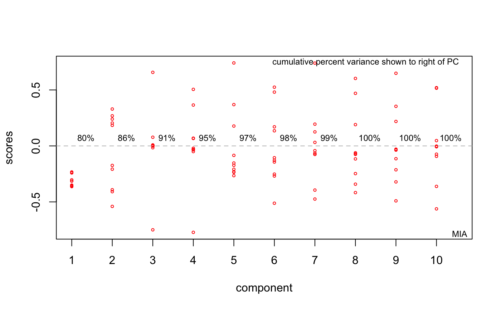
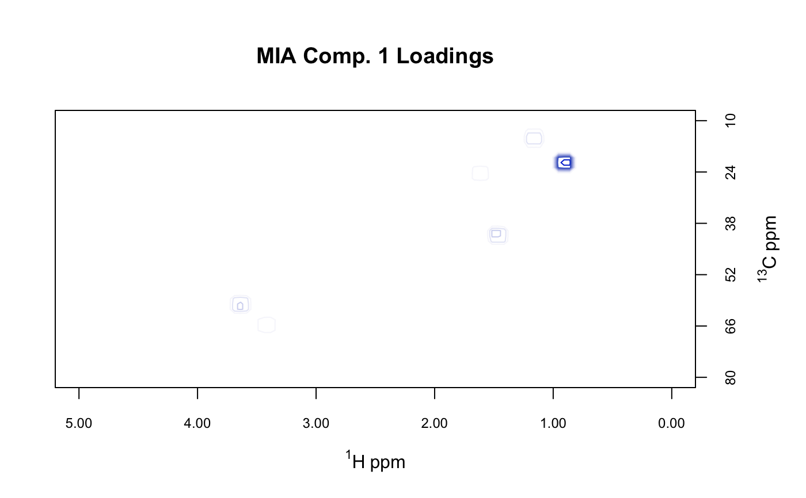
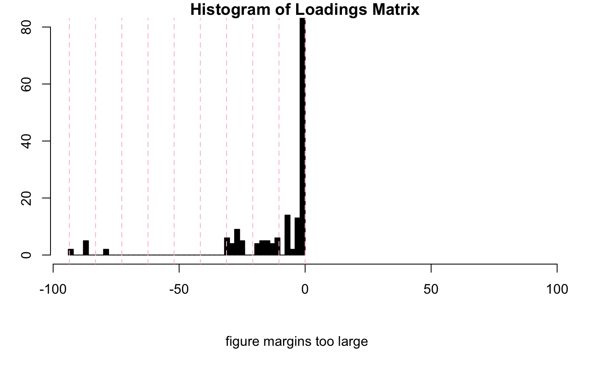

R/miaSpectra2D.R
miaSpectra2D.RdCarry out multivariate image analysis of a Spectra2D object
(multivariate image analysis is the same as a Tucker1 analysis).
Function pcasup1 from package ThreeWay is used.
miaSpectra2D(spectra)
| spectra | An object of S3 class |
|---|
A list per pcasup1. Of particular interest are the
elements C containing the eigenvectors and 1c containing the eigenvalues.
We add the class mia to the list for our use later, as well as a method
element for annotating plots.
A. Smilde, R. Bro and P. Geladi "Multi-way Analysis: Applications in the Chemical Sciences" Wiley (2004). See especially Example 4.5.
P. Geladi and H. Grahn "Multivariate Image Analysis" Wiley (1996). Note that in this text the meanings of scores and loadings are reversed from the usual spectroscopic uses of the terms.
For other data reduction methods for Spectra2D objects, see
pfacSpectra2D and popSpectra2D.
#> PCASUP: eigenvalues mode C #> Eigenvalue Fit(%) #> Comp.1 92964.50 79.89 #> Comp.2 6995.23 85.90 #> Comp.3 5744.79 90.84 #> Comp.4 4342.95 94.57 #> Comp.5 2282.62 96.53 #> Comp.6 1959.07 98.22 #> Comp.7 1132.67 99.19 #> Comp.8 528.56 99.65 #> Comp.9 263.81 99.87 #> Comp.10 148.99 100.00#> Error in (function (spectra, so, pcs = c(1, 2), ellipse = "none", tol = "none", use.sym = FALSE, leg.loc = "topright", ...) { args <- as.list(match.call())[-1] if (length(pcs) != 2) stop("You must choose exactly two PC's to plot") case <- NULL if (inherits(spectra, "Spectra")) case <- "PCA" if (inherits(spectra, "Spectra2D")) case <- "MIA" if (inherits(so, "pop")) case <- "PCA" if (is.null(case)) stop("Could not reconcile data object and scores object.") if ((case == "MIA") && (use.sym)) stop("ChemoSpec2D does not support use.sym") chkSpectra(spectra) if (case == "PCA") DF <- data.frame(so$x[, pcs], group = spectra$groups) if (case == "MIA") DF <- data.frame(so$C[, pcs], group = spectra$groups) GRPS <- dlply(DF, "group", subset, select = c(1, 2)) if ((ellipse == "cls") || (ellipse == "rob") || (ellipse == "both")) { gr <- sumGroups(spectra) for (n in 1:length(gr$group)) { if (gr$no.[n] == 1) message("Group ", gr$group[n], "\n\thas only 1 member (no ellipse possible)") if (gr$no.[n] == 2) message("Group ", gr$group[n], "\n\thas only 2 members (no ellipse possible)") if (gr$no.[n] == 3) message("Group ", gr$group[n], "\n\thas only 3 members (ellipse not drawn)") } idx <- which(gr$no. > 3) gr <- gr[idx, ] ELL <- llply(GRPS[idx], .computeEllipses) x.scores <- range(llply(GRPS, subset, select = 1)) y.scores <- range(llply(GRPS, subset, select = 2)) x.ell <- range(llply(ELL, function(x) { range(x[1]) })) y.ell <- range(llply(ELL, function(x) { range(x[2]) })) x.ell.r <- range(llply(ELL, function(x) { range(x[4]) })) y.ell.r <- range(llply(ELL, function(x) { range(x[5]) })) x.all <- range(x.scores, x.ell, x.ell.r) x.all <- x.all + diff(x.all) * 0.05 * c(-1, 1.15) y.all <- range(y.scores, y.ell, y.ell.r) y.all <- y.all + diff(x.all) * 0.05 * c(-1, 1.15) } if (ellipse == "none") { x.scores <- range(llply(GRPS, subset, select = 1)) y.scores <- range(llply(GRPS, subset, select = 2)) x.all <- range(x.scores) + diff(range(x.scores)) * 0.05 * c(-1, 1.15) y.all <- range(y.scores) + diff(range(y.scores)) * 0.05 * c(-1, 1.15) } dPargs <- list(PCs = DF[, 1:2], spectra = spectra, case = case, use.sym = use.sym, ... = ...) if (!"xlim" %in% names(args)) dPargs <- c(dPargs, list(xlim = x.all)) if (!"ylim" %in% names(args)) dPargs <- c(dPargs, list(ylim = y.all)) do.call(.drawPoints, dPargs) if ((ellipse == "cls") | (ellipse == "rob") | (ellipse == "both")) .drawEllipses(ELL, gr, ellipse, use.sym, ...) if (case == "PCA") { .addMethod(so) if (leg.loc != "none") .addLegend(spectra, leg.loc, use.sym, bty = "n") .addEllipseInfo(ellipse) } if (case == "MIA") { if (leg.loc != "none") .addLegend(spectra, leg.loc, use.sym = FALSE, bty = "n") .addEllipseInfo(ellipse) } if (tol != "none") .labelExtremes(DF[, 1:2], spectra$names, tol)})(spectra = MUD1, so = res, ellipse = "cls", tol = 1, main = "MIA Scores", xlab = "Component 1 (79.89%)", ylab = "Component 2 (6.01%)", use.sym = FALSE): object 'res' not foundplotScree(res)# Selection of loading matrix levels can be aided by the following # Use MUD1a$names to find the index of the loadings inspectLvls(MUD1a, which = 11, ylim = c(0, 80), main = "Histogram of Loadings Matrix" )